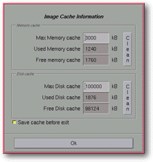

<!-- Documentation Xclamation (c)1994-2000 AXENE contact axene@axene.org>
<html>

<head>
<title>Image Cache Configuration</title>
</head>

<body BGCOLOR="#FFFFFF" BACKGROUND="Images/back.gif" TEXT="#000000">

<p ALIGN="right">  </p>

<p><br>
<br>
The Image Cache configuration box allows for immediate view of the image cache and permits
changes to be made to its specifications. The image cache is a memory stamp which will
store in active memory or on disk the images used in documents opened by Xclamation.
Images are first placed in the active memory cache, then once that is full the system
stores less frequently-used pictures in the cache on disk. The initial specifications of
this image cache are defined in the <a HREF="ConfigImageCache.html">configuration files.</a>
<br>
<br>
</p>

<hr>

<p><br>
</p>

<p align="center"> <br>
<small><i>Screen shot: Image cache configuration dialog box </i></small></p>

<p><br>
</p>

<hr>

<p><br>
</p>

<h3>Upper portion of the dialog box:</h3>

<ul>
  <li><a NAME="memory_cache_frame">The <i>&quot;Memory Cache&quot;</i> section deals with the
    ensemble of images contained in the <b>active memory</b> portion of the image cache. </a><br>
    &nbsp; <ol>
      <li><a NAME="max_memory_textfield">Total <i>&quot;Max Memory Cache&quot;</i> sets the
        maximum size for the active memory portion of the image cache. This value is expressed in
        kilo-bytes (1024 bytes) and must be set between 0(Kb) and 100,000(Kb). Changes to the
        Total Memory Cache take effect immediately. If the value 0 (Kb) is specified, the image
        cache has only enough memory to hold the last image loaded. </a><br>
        &nbsp;</li>
      <li><a NAME="used_memory_textfield">The <i>&quot;Used Memory Cache&quot;</i> information
        text field <b>indicates the current amount of space occupied by the images in the memory
        cache</b>. This non-modifiable value can be greater than the maximum total memory size of
        the image cache by the size of the last image loaded. </a><br>
        &nbsp;</li>
      <li><a NAME="free_memory_textfield">The <i>&quot;Free Memory Cache&quot;</i> information
        text field <b>indicates the amount of memory space still available</b> in the images
        cache. This value is determined by subtracting used memory cache from Total memory cache.
        Because the used memory can be larger than the total size, this value can be negative. </a><br>
        &nbsp;</li>
      <li><a NAME="memory_clear_button">The <i>&quot;Clean&quot;</i> button <b>empties the Memory
        Cache</b>. It destroys images currently held in memory, meaning they will require
        re-loading upon next use (ex. for rotation or sizing). In order to free up memory and
        space, it's a good idea to empty the memory cache when modifying a image file that will be
        reloaded from Xclamation. </a><br>
        &nbsp;</li>
    </ol>
  </li>
  <li><a NAME="disk_cache_frame">The <i>&quot;Disk Cache&quot;</i> section deals with the
    ensemble of images contained in the image cache stored on the <b>hard disk</b>. </a><br>
    &nbsp;<ol>
      <li><a NAME="max_disk_textfield">The <i>&quot;Max Disk cache&quot;</i> text field <b>defines
        the maximum size of the image cache on the hard disk</b>. This value is expressed in
        kilo-bytes (1024 bytes) and must be set between 0(Kb) and 1,000,000(Kb). Changes made to
        this value take effect immediately. If a value of 0(Kb) is specified, the image cache
        cannot hold anything in memory on the hard disk; the images will be reloaded from their
        original file upon their next use (ex. for rotation or sizing). </a><br>
        &nbsp;</li>
      <li><a NAME="used_disk_textfield">The <i>&quot;Used Disk Cache&quot;</i> information text
        field <b>indicates the amount of disk space currently occupied by images</b>. This value
        cannot be modified. </a><br>
        &nbsp;</li>
      <li><a NAME="free_disk_textfield">The <i>&quot;Free Disk cache&quot;</i> information text
        field <b>indicates the available free disk space in the image cache</b>. This value is
        calculated by subtracting the Used Disk Cache from the Total Disk Cache. </a><br>
        &nbsp;</li>
      <li><a NAME="disk_clear_button">The <i>&quot;Clean&quot;</i> button <b>empties the disk
        cache</b>. It deletes images currently stored on the disk, meaning they will require
        re-loading upon next use (ex. for rotation and sizing). In order to free up disk space,
        it's a good idea to empty the disk image cache when modifying an image file to be reloaded
        from Xclamation. </a><br>
        &nbsp;</li>
    </ol>
  </li>
  <li><a NAME="save_cache_button">The <i>&quot;Save Cache before quitting&quot;</i> button <b>saves
    the contents of Xclamation's active memory and disk caches</b> until their next use. If
    this button is not engaged, the disk cache will be deleted when quitting Xclamation in
    order to free up space on the hard disk. It's a good idea to activate this button when
    frequently editing the same Xclamation document. </a><br>
    &nbsp;</li>
</ul>

<p><b>Note:</b> When changing display type on a server (for ex., altering display depth)
between two launchings of Xclamation, it's preferable to empty the cache before loading
image contained within. </p>

<p><br>
</p>

<h3>Lower portion of the dialog box:</h3>

<ul>
  <li><a NAME="button_ok"><i>&quot;Ok&quot;</i> <b>closes the dialog box</b>. Because all
    modifications carried out on the configuration of the image cache are effected in
    real-time, cancelation is not an option. </a><br>
    &nbsp;</li>
</ul>

<p><br>
</p>

<hr>

<p ALIGN="right"></p>
</body>
</html>
